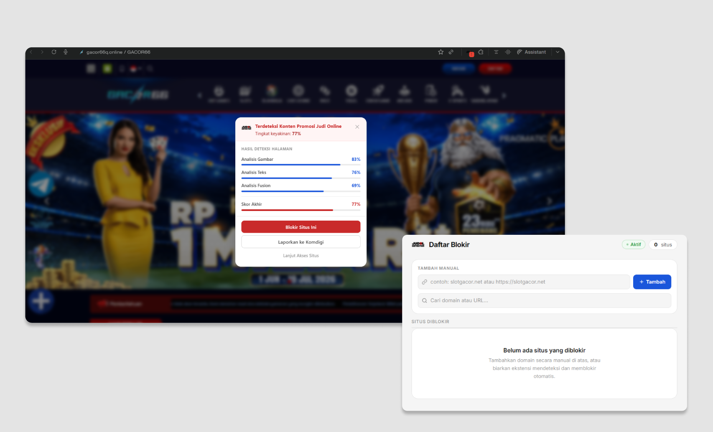

Browsing tanpa
jebakan judi online.
Judol Detector memindai setiap halaman yang Anda buka dan memberi peringatan saat menemukan promosi judi online berupa teks maupun gambar.

Otomatis, tanpa konfigurasi.
Pasang ekstensi, aktifkan, selesai. Tidak ada pengaturan yang perlu diisi.
Pemindaian otomatis
Setiap halaman yang Anda buka dipindai secara otomatis. Teks dan gambar dianalisis di background tanpa memperlambat browser.
Deteksi berbasis AI
Menggunakan tiga model gabungan yang sudah dilatih untuk memperoleh hasil deteksi yang lebih akurat.
Peringatan & tindakan
Jika terdeteksi, muncul notifikasi di popup. Anda bisa blokir situs, aktifkan sensor konten, atau lapor ke Komdigi dengan satu klik.
Apa yang bisa dilakukan.
Deteksi teks & gambar
Menggunakan model teks dan gambar yang jalan bersamaan dan hasilnya digabung untuk akurasi lebih tinggi.
Mode sensor / blur
Konten yang terdeteksi bisa di-blur otomatis. Halaman tetap bisa diakses, tapi konten judolnya tidak langsung terlihat.
Daftar blokir
Domain yang diblokir tersimpan lokal di browser. Bisa tambah manual, cari, atau hapus kapan saja dari halaman daftar blokir.
Lapor ke Komdigi
Satu klik buka platform aduan resmi Kementerian Komunikasi dan Digital untuk melaporkan situs yang terdeteksi.
Cara pasang di browser.
Ekstensi ini belum ada di Chrome Web Store, jadi instalasinya manual. Butuh sekitar 2 menit.
-
1Download dan ekstrak file ZIP Simpan folder hasil ekstrak di lokasi yang mudah ditemukan.
-
2Buka halaman ekstensi browser Ketik
chrome://extensionsdi address bar, lalu tekan Enter. -
3Aktifkan Developer Mode Toggle di pojok kanan atas halaman ekstensi harus aktif sebelum lanjut.
-
4Load folder ekstensi Klik Load unpacked dan pilih folder yang sudah diekstrak tadi.